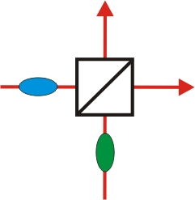
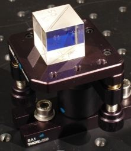

Das Demonstrationsxperiment zur HOMI wurden durch die Robert Bosch Stiftung gefördert.
Hong-Ou-Mandel Interferenz
Übersicht
Die Hong-Ou-Mandel Interferenz (HOMI) ist ein Quantenphänomen, das von den Wissenschaftlern Hong, Ou und Mandel 1987 zum ersten Mal experimentell beobachtet wurde [Hon87]. Für das Experiment wird ein symmetrischer Strahlteilerwürfel benötigt, an dem die Hälfte des einfallenden Lichts transmittiert und die andere Hälfte des einfallenden Lichts reflektiert wird. Dieses symmetrische Teilungsverhältnis ändert sich jedoch grundlegend in der Quantenwelt. Die Hong-Ou-Mandel Interferenz zeigt sich, wenn zwei einzelne Quantenobjekte ununterscheidbar auf einen Strahlteilerwürfel treffen. Anwendung findet der Hong-Ou-Mandel dip z. B. bei der Quantenteleportation [Urs04].
Kapitel 1: Möglichkeiten am Strahlteiler und Ununterscheidbarkeit von Photonen Kapitel 2: Durchführung des Experimentes
 |
 |
Welche Möglichkeiten haben zwei Photonen am Strahlteiler?
Das Demonstrationsxperiment zur HOMI wurden durch die Robert Bosch Stiftung gefördert.